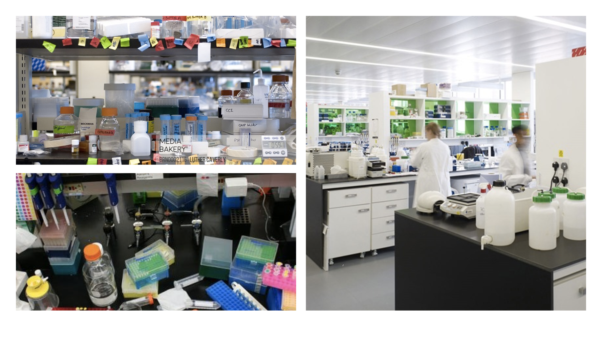
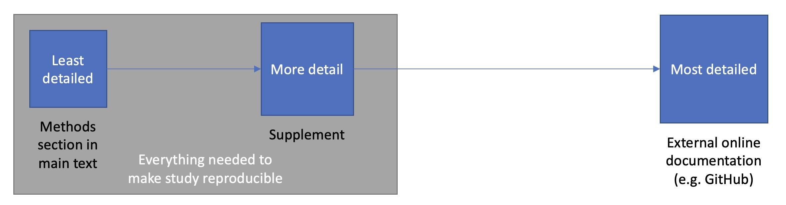

7 Project Management and Writing Methods
A Guide to Reproducible Computational Research
This chapter delves into some topics that are not covered in typical bioinformatics course, but are essential to doing bioinformatics. Specifically, we dive deep into two major components of reproducible bioinformatics research - project management and methods sections. As such, this chapter is split into these two major sections to cover these critical best practices and reveal these aspects of hidden curriculum in this field.
7.1 Section 1: Project Management for Bioinformatics Research
Bioinformatics projects are inherently complex: they involve large datasets, many computational steps, diverse software tools, and often distributed teams. Digital work is fragile—files are easy to overwrite, analysis steps are easy to forget, and key decisions are rarely obvious months later. Systematic project organization and documentation are therefore not optional extras but the foundation of reproducible research and your own future productivity1. A small investment in organization at the start of a project pays off every time you need to rerun, extend, or defend an analysis.

Just as a cluttered bench slows down wet‑lab work, a chaotic directory structure makes simple computational tasks stressful and error‑prone. Your goal is to make your digital lab bench feel like the image on the right and now those on the left.
7.1.1 Foundational Principles
At the heart of effective project management in bioinformatics lie several core principles that guide all subsequent practices. First among these is the principle that everything you do, you will probably have to do over again1. This may sound pessimistic, but it reflects the iterative nature of computational research. Reviewer requests for new analyses or access to additional samples are much easier to address when your earlier work is well documented.
The second principle recognizes that project organization exists not just for human readers, but to facilitate automation. Bioinformatics routinely involves processing hundreds or thousands of files, and the ability to programmatically access and manipulate these files is essential. This automation depends on predictable directory structures and consistent file naming schemes. When your sequencing files follow a systematic naming pattern like sample-A_replicate-1_read-R1.fastq.gz, writing a script to process all samples becomes straightforward. When files are inconsistently named like sampleA-1.fastq and sample_A_rep2_R1.fq.gz, the same task becomes frustrating and time intensive2.
The third principle emphasizes that documentation should be comprehensive yet lightweight. Every analytical step that produces results used in your work needs to be documented somewhere, including the full command lines, all parameter values (even defaults), software versions, and the provenance of all input data. However, this documentation need not be burdensome. Plain text formats like Markdown allow you to quickly record information in a format that is readable, searchable, and future-proof.
Modern genomic analyses involve complex chains of computational steps—downloading data, quality control, alignment, variant calling, and downstream analysis. Rather than writing monolithic shell scripts that hardcode file paths and parameters, workflow thinking means viewing your analysis as a directed acyclic graph (DAG) where each computational step is a node and dependencies are edges. This approach naturally leads to modular, reproducible, and parallelizable analyses. Workflow managers like Snakemake, Nextflow, and Common Workflow Language (CWL) implement these principles by letting you separate configuration from code, explicitly declare inputs and outputs for each step, and automatically parallelize independent tasks. For example, the snpArcher pipeline demonstrates how this thinking enables consistent reanalysis of diverse datasets3. By defining samples in structured tables and parameters in configuration files, the authors processed datasets ranging from 6 to 306 individuals using identical variant calling logic—what would take weeks of manual script-wrangling became a single command per dataset.
The key insight is to design for reproducibility from the start: each workflow step should be idempotent, or an operation or function that produces the same result regardless of how many times it is executed. Configuration should live in YAML or CSV files rather than scattered through code, and the DAG structure should make parallelization opportunities obvious. When snpArcher splits genome intervals at assembly gaps rather than processing chromosomes sequentially, the workflow manager automatically distributes hundreds of small tasks across available compute resources, reducing runtime from days to hours. This same workflow runs unchanged on laptops, HPC clusters, or cloud platforms by simply switching resource profiles. Students new to workflow thinking should start by converting a single analysis pipeline to a workflow manager, focusing first on getting the basic DAG working before optimizing for parallelization. The investment pays immediate dividends: analyses become faster, more reliable, and truly reproducible—collaborators can recreate exact results years later because both code and configuration are versioned together.
7.1.2 Project Directory Structure
The foundation of any well-organized bioinformatics project is a clear directory structure that logically separates different types of content while maintaining everything related to a single project under a common root directory. This seemingly simple practice has profound implications for project management. When all files live within a single directory hierarchy, the project becomes portable between systems, collaborators can easily obtain all necessary materials, and version control systems can track the entire project as a cohesive unit2.
A practical directory structure balances logical organization at the top level with chronological organization for experimental work. Consider a project investigating SNP calling in maize. At the root level, you might have directories for data/ to store raw and intermediate datasets, scripts/ for analysis code, results/ for computational experiments, and docs/ for manuscripts and documentation. This top-level logical organization makes it immediately clear where different types of content belong. Within the data/ and results/ directories, however, chronological organization often works better than purely logical schemes. Creating subdirectories named by date (using the YYYY-MM-DD format for proper sorting) provides an automatic record of when work was performed and allows you to easily track the evolution of your analyses1.
This chronological approach prevents a common pitfall where researchers create elaborate logical directory structures that quickly become outdated as projects evolve. What seems like a well-planned set of analysis categories at the project’s start may bear little resemblance to the final structure of completed work. Chronologically organized directories adapt naturally to this evolution, and when combined with descriptive README files in each directory, provide both structure and flexibility. For example, a directory named 2024-01-15-quality-control/ clearly indicates when this work occurred, while its README file explains what quality control steps were performed and why.
Within individual analysis directories, you can reintroduce logical organization as needed. If a single experiment generates many output files, creating subdirectories for different file types maintains clarity. The key is to let the organization emerge from the actual structure of your work rather than trying to impose a rigid scheme in advance. This organic approach, guided by consistent documentation, creates project structures that remain understandable months or years later4.
One critical detail in project organization concerns the use of relative versus absolute paths. When scripts or configuration files reference other files in your project, always use relative paths like ../data/reference.fasta rather than absolute paths like /home/username/projects/maize-snps/data/reference.fasta. Relative paths ensure that your project remains functional regardless of where it is located on the filesystem, making it truly portable between collaborators and systems. Absolute paths, by contrast, embed assumptions about directory structures that break as soon as the project is moved2.
7.1.3 File Naming Conventions
File naming in bioinformatics is more than a matter of personal preference; it directly impacts your ability to work efficiently with your data. The Unix command line and most programming languages provide powerful tools for programmatically accessing files, but these tools become useless when filenames are inconsistent or contain problematic characters. The transition from graphical user interfaces, where spaces in filenames pose no problems, to command-line environments, where spaces must be carefully escaped, catches many researchers off guard. A filename like raw sequences.fastq appears innocuous but creates constant headaches in Unix environments where spaces separate command arguments2.
Best practice dictates using only letters, numbers, underscores, and dashes in filenames, while avoiding spaces, special characters, and symbols. This restriction may seem limiting, but it ensures your filenames work seamlessly across different operating systems and command-line environments. Additionally, including file extensions that clearly indicate content type greatly aids interpretation. A file named zmays-genes.fasta immediately signals that it contains sequence data in FASTA format, while a file named simply zmays-genes provides no such clarity.
Consistency in naming schemes becomes particularly important when working with multiple related files. Consider a project with paired-end sequencing data for three maize samples. Filenames like zmaysA_R1.fastq, zmaysA_R2.fastq, zmaysB_R1.fastq, zmaysB_R2.fastq, zmaysC_R1.fastq, and zmaysC_R2.fastq follow a predictable pattern where sample names and read pairs occupy fixed positions in the filename. This consistency enables powerful pattern matching using shell wildcards. The expression zmaysB* matches all files for sample B regardless of read pair, while zmays*_R1.fastq matches all forward reads across all samples. These seemingly simple pattern matching capabilities become invaluable when processing hundreds of samples. For numbered files, use leading zeros (gene-001.txt) so alphabetical sorting matches numeric order2.
The consequences of poor file naming extend beyond inconvenience. In collaborative projects, confusion over which file represents the current version of an analysis can cascade into wasted effort or, worse, serious errors that make it into publications. The small investment in establishing and maintaining consistent naming conventions provides insurance against these costly mistakes5.
7.1.4 Documentation and Metadata
Without adequate documentation, a project directory becomes an archaeological site where future researchers (often your future self) must attempt to reconstruct what happened and why, with only the artifacts of computation as evidence. Therefore, you should document everything about how you obtained and processed your data, because the details that seem obvious today will be mysterious later6. At the most fundamental level, you must document the origin of all data in your project. This includes not just experimental data you generated, but also reference genomes, annotation files, sequence databases, and any other external resources. For each dataset, record where you obtained it, when you downloaded it, how you downloaded it, and any version information available. A simple README file in your data directory might note that the mouse reference genome version GRCm38 was downloaded from Ensembl on a specific date using a specific wget command. This level of detail may seem excessive, but external databases change over time, file versions are updated, and resources sometimes disappear entirely, making this documentation invaluable years later2.
Version information deserves special attention because even minor software updates can produce different results. Good documentation records not just the name of each program used, but its version number, the parameters specified (including default values), and ideally the exact command line used. Many modern bioinformatics tools provide a flag to display version information (often --version or -v), and this version string should be captured in your documentation. For software managed through version control systems like Git, the specific commit hash provides an unambiguous identifier of the exact code version used6.
The chronological aspects of data acquisition and analysis also matter for reproducibility. When you download a dataset from a database that is regularly updated, the current version of that database may differ from what was available when you performed your original analysis. Recording the download date provides context for understanding potential discrepancies. Similarly, documenting when each analysis was performed helps track the evolution of your understanding and can be critical for debugging when results change unexpectedly1.
Beyond raw provenance information, documentation should capture the reasoning behind your choices. Why did you choose one assembly tool over another? What led you to select particular quality filtering thresholds? Which preliminary analyses informed your final approach? This narrative documentation need not be lengthy, but it should provide enough context that someone reading your notes can understand your thought process. Such documentation often proves most valuable when it records what did not work, as this prevents future repetition of failed approaches and provides crucial negative results that rarely appear in publications but are essential for scientific progress4. These habits will save you time when you later write up your methods and data availability statements (see Section 2 below).
7.1.5 Version Control Integration
Version control systems, particularly Git, have become indispensable tools for managing bioinformatics projects. At its core, version control maintains a complete history of your project, allowing you to track changes over time, recover from mistakes, and maintain multiple versions of your work simultaneously4.
The discipline of regular commits to version control serves multiple purposes in project management. Each commit represents a snapshot of your project at a specific point in time, creating a detailed historical record of how your analysis evolved. This becomes invaluable when you need to reproduce exactly what was done three months ago, or when you need to determine when a particular change was made that affected your results. The commit messages themselves form a chronological log of your project’s development, supplementing your README documentation with a more granular record of changes6.
However, not all files in your project directory should be placed under version control; only the scripts and documentation needed to regenerate your workflow need to be tracked1. Large files and computational results that can be regenerated from documented workflows do not need version tracking, and can be ignored by adding these files and directories to your .gitignore file.
The collaborative features of Git and GitHub extend the value of version control beyond individual project management7. When working with collaborators, a shared Git repository becomes the single source of truth for project code and documentation. Team members can work on different features simultaneously through branching, merge their changes systematically, and track who made which modifications and why. This collaborative workflow dramatically reduces the email attachments, confused file versions, and communication overhead that plague unstructured collaborative projects5. Clear commit histories and tagged releases also make it possible to cite the exact version of your code in the methods section (see Section 2).
7.1.6 Agile Project Management and Kanban Boards
While the bioinformatics literature has primarily focused on technical aspects of project organization, project management methodologies from software engineering offer valuable frameworks for organizing computational research. Agile methodologies, particularly when implemented through visual tools like Kanban boards, provide structure for managing the iterative, exploratory nature of bioinformatics projects while maintaining the flexibility that research demands.
The core insight of Agile approaches is that complex projects are better managed through iterative development cycles rather than rigid upfront planning. In a bioinformatics context, this aligns naturally with how research actually proceeds. You might begin with a broad research question, but the specific analyses required only become clear as you explore the data and obtain preliminary results. Rather than attempting to plan every analysis step months in advance, Agile methodologies embrace this uncertainty by breaking work into small, manageable tasks that can be completed in short iterations4.
Kanban boards provide a visual system for tracking these tasks through their lifecycle. At its simplest, a Kanban board has three columns: “To Do,” “In Progress,” and “Done.” Each task is represented by a card that moves through these columns as work progresses. This visualization serves several purposes. It provides an immediate overview of project status, makes work-in-progress explicit (preventing the common problem of starting too many tasks and finishing none), and creates a satisfying sense of progress as cards move to the “Done” column. The physical act of moving a card provides positive reinforcement that sustains motivation through long projects.
![A blank Kanban-style research progress tracker table with eight columns labeled (left to right): Project Ideas, Experimental design and piloting, Experimenting and data collection, Data analysis and Interpretation, Writing for publication, Submitted for publication or in review, In revision, and Accepted for publication or in press. The column headers are displayed in bold text on a gray background. The single data row beneath the headers is empty, providing space to track a research project's progression through each stage of the research and publication workflow.](images/Figure_7-2_Kanban.png)
Here is an example of how you can extend the simple three‑column model into stages that better match a research project lifecycle, illustrating how flexible these tools can be. This research project Kanban board has customized swim lanes for stages of a research project, from when they start out as simple ideas to when they are accepted for publication.
GitHub Projects integrates Kanban functionality directly into the platform where many bioinformatics projects already live. This integration is particularly powerful because it connects tasks directly to code, documentation, and issues. A card on your Kanban board might represent implementing a new quality control step, and that card can link to the specific GitHub issue discussing the approach, the pull request containing the implementation, and the commit that ultimately merged the code. This creates a rich web of connections between project planning and project execution that greatly aids both doing the work and documenting what was done4.
The level of granularity for tasks on a Kanban board requires some judgment. Tasks should be small enough to complete in a reasonable timeframe (hours to a few days rather than weeks), but not so small that the overhead of managing tasks exceeds their value. In practice, tasks like “download reference genome and verify checksums,” “run quality control on batch 1 samples,” or “implement GC content calculation function” represent appropriate granularity. Larger objectives like “complete genome assembly” should be broken down into their constituent steps, each becoming a separate card.
One valuable practice is to include cards for documentation and quality assurance alongside cards for analysis tasks. A card might represent “document quality control parameters in README” or “review and test assembly script.” This ensures that documentation and quality control remain integral to your workflow rather than afterthoughts. The visibility of these tasks on your board reinforces their importance and helps prevent the common pattern where documentation is perpetually postponed until some mythical future time when the “real work” is finished5.
7.1.7 Practical Workflow Integration
Understanding principles and tools is valuable, but seeing how they integrate into an actual workflow brings these concepts to life. Consider a realistic bioinformatics project investigating genetic variants associated with drought resistance in a crop plant. The project begins with planning and setup, proceeds through data generation and analysis, and concludes with interpretation and communication of results. Throughout this lifecycle, the project management practices we have discussed work together to maintain organization and reproducibility.
Project initialization establishes the foundation. You create a project directory with a descriptive name like prdm9-protein-evolution, initialize it as a Git repository, and establish the basic directory structure:
project-root/
├── data/ # Project datasets
│ ├── README.md
│ ├── fastq/
│ │ ├── sample1_R1.fastq.gz
│ │ ├── sample1_R2.fastq.gz
│ │ └── ...
│ └── fasta/
│ └── GRCh38.fa
├── analysis/ # Computational experiments
├── docs/ # Documentation and manuscripts
├── scripts/ # Scripts and code
│ ├── 01_fetch_sra.sh
│ ├── 02_index_genome.sh
│ └── 03_trimming.sh
└── README.md # Project overviewA root-level README file documents the project’s objectives, your collaborators, and high-level organization. You create a GitHub repository and push your initial structure, then set up a GitHub Project with a Kanban board. Initial cards capture the major milestones: obtaining sequences, quality control, variant calling, association analysis, and manuscript writing. Each of these will later be broken down into smaller tasks2.
In Lab 4 you will get access to a Sample Genome Analysis working directory that is organized using the same directory struture described above. As you work through the yeast genomics dataset this semester, you will continue to build this sample working directory which can serve as an example moving forward from this course.
Data acquisition requires careful documentation. When you download the reference genome from a public database, you record the exact URL, download date, genome version, and calculate checksums to verify integrity. This information goes into data/README.md along with the specific wget command used. The reference genome file itself remains outside version control due to its size, but your documentation ensures anyone can obtain the identical file. The same applies to your experimental sequencing data; detailed metadata about samples, sequencing runs, and quality metrics are documented even though the large FASTQ files themselves are not versioned6.
As analysis proceeds, your workflow becomes a rhythm of task management, execution, and documentation. Each morning, you review your Kanban board to select the next task. Perhaps today’s card is “implement read quality filtering.” You create a new script in the scripts/ directory with a descriptive name like filter_reads.py, following your established naming conventions. As you write the script, you document your approach with inline comments and ensure all parameters are configurable rather than hard-coded. When the script works correctly, you commit it to Git with a clear commit message explaining what the script does and why certain filtering thresholds were chosen. You move the card to “Done” on your Kanban board and add a new card for “apply quality filtering to all samples”4.
Running analyses at scale demonstrates the value of consistent file organization. Because your FASTQ files follow the naming pattern sample-ID_replicate_read.fastq.gz, you can write a simple loop that processes all samples without manually specifying each filename. The output goes into a dated subdirectory within results/, like results/2026-01-28-fastqc-report/. Each results directory contains its own README documenting exactly what was run, which version of each script was used, what parameters were specified, and which input files were processed. The full command line is recorded, often by redirecting the script’s verbose output to a log file that becomes part of the permanent record2.
When you encounter problems, version control and documentation prove their worth. A script that worked last week now produces errors. You use Git to compare the current version against the last working version, quickly identifying the problematic change. Or perhaps a collaborator questions an analysis result. You can point them to the specific commit containing the analysis script, the README documenting parameters, and the log files showing exactly what was executed. This transparency builds trust and facilitates the kind of critical examination that strengthens science6. These logs often become the raw material you will transform into formal methods text later in the manuscript.
Collaboration scenarios showcase GitHub’s strengths. A colleague wants to contribute a new analysis approach. They fork your repository, create a branch for their work, and submit a pull request when ready. You review their code, discuss approaches through GitHub’s comment system, and merge their contribution once satisfied. The entire discussion and decision process becomes part of the project’s permanent record. Meanwhile, your Kanban board reflects everyone’s contributions, with cards assigned to different team members and status visible to all5.
When you first set up a new GitHub repository, you can choose to add a license. Many people skip this in the haste of getting started, especially if it is a private repository. But if the goal is to eventually make the code public, it is a good idea to add a license agreement. A standard licence is the MIT license, which GitHub offers as one of their templates. It is as easy as checking a box.
If you already have a repository and you want to add a license, simply add a file and name it License.md and GitHub will automatically ask you if you want to use one of their templates. You can learn more on the open access page of the AU Library.
7.1.8 Common Pitfalls and Solutions
Even with good intentions and solid practices, certain challenges recur in bioinformatics project management. Recognizing these common pitfalls and knowing how to address them can save considerable frustration. One frequent problem is the proliferation of slightly different versions of analysis scripts or data files, often with names like analysis_v2.py, analysis_v2_final.py, analysis_v2_final_revised.py, and so on. This typically occurs when researchers are hesitant to overwrite files for fear of losing previous work. The solution is version control; when all changes are tracked through Git, you can confidently update files knowing that previous versions remain accessible through the repository history4.
Another common issue is the accumulation of poorly documented intermediate files whose purpose becomes mysterious over time. A results/ directory fills with files like output_temp.txt, test_results_2.csv, and filtered_data_new.tsv, and six months later no one remembers what they contain or whether they are still needed. This problem stems from inadequate documentation during exploratory analysis. The solution is discipline around naming (even temporary files should have descriptive names) and documentation (README files should explain even exploratory analyses). Some researchers also adopt a practice of regular cleanup sessions where they review intermediate files, document any that are valuable, and delete those that are not1.
The challenge of parameter proliferation also trips up many projects. A typical bioinformatics pipeline might involve dozens of parameters across multiple tools, and tracking which parameter values were used for which analysis becomes a nightmare. Some researchers try to solve this by embedding parameters in filenames (results_minscore30_minlen50.txt), but this quickly becomes unwieldy. A better approach is to write scripts that log all parameters to output files, or to use configuration files that are versioned alongside scripts. Many researchers now adopt workflow management systems specifically to handle parameter tracking systematically6.
Data organization can break down when projects grow beyond their initial scope. The temptation to reorganize should be resisted, as reorganization breaks the connections between old documentation and current file locations. If reorganization is essential, it should be done systematically with careful documentation of the changes and updating of all relevant README files and analysis scripts2.
The integration of automated testing, a standard practice in software development, remains underutilized in bioinformatics despite its value. When you write a script to process sequencing data, how do you know it works correctly? Manual testing with a few examples is better than nothing, but automated tests that run every time you modify the script provide much stronger assurance. Even simple checks, like verifying that output files contain the expected number of records or that numerical results fall within sensible ranges, can catch many errors before they propagate through an analysis pipeline4.
7.2 Conclusion Part 1
Effective project management in bioinformatics is ultimately about making life easier for your future self and your collaborators while advancing the broader goal of reproducible science. The practices described in this chapter—systematic directory organization, consistent file naming, comprehensive documentation, version control, and structured task management—may seem like overhead when you are eager to dive into analysis. However, this investment pays dividends throughout a project’s lifetime and beyond. The time spent documenting a data download is trivial compared to the time lost trying to remember months later where data came from. The discipline of following naming conventions seems tedious until you need to programmatically process hundreds of files. The ritual of regular Git commits feels unnecessary until you need to recover from a mistake or track down when a change was introduced1.
Moreover, these practices scale naturally from individual work to collaborative projects. When you maintain clear documentation and organization for your own benefit, bringing a collaborator up to speed becomes straightforward. When your scripts are version controlled and well documented, sharing them with the broader community requires minimal additional effort. When your data provenance is meticulously recorded, responding to questions from reviewers or readers becomes a matter of consulting your notes rather than reconstructing history from fragments6.
The specific tools and approaches will continue to evolve. New version control systems will emerge, project management platforms will add features, and workflow management systems will grow more sophisticated. However, the fundamental principles remain constant: organize systematically, document comprehensively, track changes explicitly, and automate where possible. These principles transcend any particular tool or technology and will serve you well regardless of how the technical landscape changes.
Perhaps most importantly, good project management makes science better. When analyses are reproducible, reviewers can verify results and readers can build on your work. When methods are thoroughly documented, other researchers can apply your approaches to new datasets or extend them in novel directions. When negative results are documented alongside positive findings, the scientific community avoids redundant dead ends. In an era where reproducibility concerns have shaken confidence in published findings, the practices of rigorous project management represent not just personal virtue but professional responsibility5.
The path to mastery of these practices is incremental. You need not implement everything at once, nor achieve perfection on your first project. Start with the basics: create a clear directory structure, maintain README files, use version control for your scripts, and name files consistently. As these habits become second nature, layer on additional practices like Kanban boards for task management or more sophisticated documentation approaches. Over time, good project management stops feeling like an external discipline imposed on your work and becomes simply how you work. This transformation, from viewing organization as a chore to experiencing it as an enabling foundation, marks the transition from novice to experienced bioinformatician.
7.3 Section 2: Writing Methods Sections for Bioinformatics Research
Though it may feel daunting right now to think of writing a thesis, dissertation, or research paper, at some point you will need to communicate your findings in written form—and the project management practices from Section 1 are what make that possible. The methods section is the cornerstone of scientific reproducibility8. In bioinformatics and computational biology, where complex analytical workflows involving multiple software packages, databases, and statistical procedures are routine, clear methods documentation becomes even more critical.
This section addresses the unique challenges of documenting computational research, including how to cite software and databases, manage supplementary materials, and ensure that your analytical workflows can be understood and reproduced by other researchers. Whether you’re analyzing genomic data, building phylogenetic trees, or developing machine learning models for biological applications, the principles outlined here will help you communicate your methods effectively.
The core principle underlying effective methods writing is simple: provide sufficient detail for others to reproduce your work while organizing content logically and clearly. This requires balancing completeness with readability, justifying your methodological choices with citations, documenting all software versions and parameter settings, and making data and code accessible through appropriate repositories.
The deliverable from Lab 4 will be for you to use what you learn in this section to write a methods paragraph documenting the bioinformatics steps you take in the upcoming lab assignment. Specifically, you will need to parse the scripts provided to figure out what they do, and then describe them as if you were writing the methods section of a paper.
7.3.1 From Workflow Diagram to Written Methods
Bioinformatics research typically involves transforming raw biological data through complex computational pipelines to generate biological insights. The challenge in writing methods sections is converting these complex workflows—often represented as flowcharts with dozens of steps—into clear, readable prose that allows others to replicate your work. Consider the transformation from a typical bioinformatics workflow diagram (raw reads → quality control → alignment → variant calling → annotation → statistical analysis) to a published methods section. The key is to present this information chronologically while providing sufficient technical detail at each step. If you have maintained organized directories, clear file names, and README files as described in Section 1, reconstructing this chronological narrative becomes much simpler.
At each step of your workflow, you must include the software name and version number, a citation to the software’s primary publication, key parameters (especially if different from defaults), rationale for software choice when multiple options exist, and relevant input and output file formats. For instance, rather than simply stating "reads were aligned to the reference genome", you should specify which aligner was used, what version, which genome build, and any non-default parameters employed.
7.3.2 Citing Published Workflows and Software
When you follow an established protocol or workflow, proper citation is essential. However, vague references are insufficient and hinder reproducibility. A poor practice example would be: "Samples were processed similar to methods described previously in Smith et al. (2002)." This statement is problematic because it provides no specific details about which parts were followed, and may require accessing paywalled content to understand the methods. A better approach provides specific detail: "RNA-seq libraries were prepared following the protocol of Smith et al. (2002), with modifications to the adapter ligation step. Specifically, we used Y-shaped adapters (Illumina TruSeq) instead of the original T-tailed adapters to improve library yield for degraded RNA samples." This clearly states what was followed, what was changed, and why the modification was made.
Proper software citation requires three elements: the software name, the specific version used, and a citation to the primary publication. Version numbers are critical because software behavior can change substantially between versions. For example, in the antifreeze protein study9, the authors clearly state: "Haplotype-phased genomes of all species except for O. amberensis were assembled from long-read libraries using hifiasm v0.19.5-r592 (Cheng et al. 2021) set to default parameters." This complete citation includes the tool name (hifiasm), the exact version number (v0.19.5-r592), the primary publication citation (Cheng et al. 2021), and the parameters used (defaults). This level of detail enables others to replicate the assembly process exactly.
Reference management software like Zotero and EndNote allow you to collect, managing and cite references and software. These and other tools have browser plug-ins that can allow you to build your library of citations throughout your dissertation. Then, once you are ready to write your thesis, dissertation or scientific papers, these tools integrate seamlessly with Microsoft Word and Google Docs via free plugins or add-ons, enabling “Cite While You Write”. This allows you to insert citations directly into your documents, change the format to match journal styles, and create formatted bibliography sections.
Once inserted, citations and bibliographies update dynamically, supporting collaboration with co-authors who are able to cite from shared/group libraries or changing styles if you need to reformat for a new journal. You can learn more about different citation managers here. Auburn Libraries also offers regular workshops to learn how to use these softwares.
7.3.3 Documenting Parameter Changes and Deviations
When you deviate from default parameters, you must document what changed and why. This justification demonstrates methodological rigor and helps readers understand your analytical decisions. Consider this example of parameter documentation: "Variant calling was performed using GATK HaplotypeCaller v4.2.0 (McKenna et al. 2010). We reduced the minimum base quality score from 10 (default) to 5 to increase sensitivity for low-coverage regions, accepting a modest increase in false positives that would be filtered in downstream analyses."
Deviations from established protocols are common and often necessary. The key is to document these changes transparently and explain the rationale, demonstrating careful experimental design rather than ad hoc modification. Parameter logs, configuration files, and version‑controlled scripts created during project management become your primary sources for this level of detail. You should also justify deviations when you change published protocols or standard workflows, use non-default software parameters, apply methods to non-standard organisms or data types, omit standard quality control or filtering steps, or use alternative software from what is commonly employed.
7.3.4 Citing Public Data and Databases
Bioinformatics research frequently incorporates publicly available data, including reference genomes, variant databases, and previously published datasets. Proper citation of these resources is essential for reproducibility and gives credit to data generators. For any public dataset or database, you should include the resource name and version or build number, accession numbers or identifiers, URL or DOI for access, date accessed for databases that update frequently, and citation to the primary publication if available. For example, there is a great knowledge base article on citing NCBI Sequence Read Archive data. Specifically, be sure to provide the BioProject, BioSample, and SRA accession numbers. For databases and software without formal publications, cite the URL and include the access date. When DOIs are available, use them as they provide permanent, citable links. For example: "Protein domain architecture was analyzed using the SMART database (http://smart.embl.de/, accessed March 2024)."
Modern scientific practice requires that data and code be made available to enable reproducibility. The Data availability section provides multiple layers of access: the raw data in appropriate domain repositories (NCBI), as well as the code and intermediate files on GitHub for active development. It is worth noting the limitations of GitHub (which can change or disappear, and the importance of archiving a snapshot or release on Zenodo, which will generate a permanent DOI for long-term citation.
Different types of data should be deposited in appropriate domain-specific repositories. NCBI SRA and GEO are appropriate for high-throughput sequencing data and microarray data. GenBank handles individual sequences and annotations. Dryad and Zenodo serve as general research data repositories across disciplines. Figshare hosts datasets, figures, and supplementary materials. GitHub and GitLab are suitable for code, scripts, and small datasets under 100 MB. Institutional repositories like Auburn’s AUrora can handle large datasets that exceed GitHub’s limitations.
For GitHub repositories, best practices include providing a comprehensive README with installation instructions, documenting software dependencies and version requirements, including example data and expected outputs, and using meaningful commit messages and version tags.
7.3.5 Balancing Main Text and Supplementary Methods
Deciding what goes in the main methods section versus supplementary materials requires balancing readability with completeness. The goal is to provide sufficient detail in the main text for readers to understand your approach while reserving extensive technical details for supplements. The main text methods should include an overview of the experimental and analytical workflow, key software and versions for major analytical steps, sample sizes and experimental design, statistical approaches and significance thresholds, novel or modified protocols, and justifications for methodological choices.

This chapter assumes a tiered approach to documentation where the main text provides a readable overview, the supplement adds enough detail for reproduction, and external resources such as GitHub hold the most granular, evolving record.
7.3.6 Comparing Your Methods to Published Studies
When reanalyzing published data or using established methods, comparing your results to previous studies provides validation and helps identify potential issues. Choose comparison metrics that make sense for your analysis. The Bogan et al. (2025) study provides an excellent example when they validated their AFP identification approach: "To determine if multiple AFP translocations within a species arose from misassembly, translocated AFP III copies outside of the ancestral syntenic AFP III region were manually reviewed for evidence of misassembly. This was achieved by aligning translocated AFP III regions to (i) a known, characterized AFP translocation in A. lupus (Desjardins et al. 2012) and (ii) additional regions of translocation within single species if they possessed multiple translocation events to identify artificial duplications."
When differences exist between your results and previous studies, provide potential explanations. For example, you might note: "Re-analysis of the Smith et al. (2020) dataset using our updated pipeline identified 1,247,892 SNPs, compared to 1,238,456 reported in the original study (0.8% difference). This minor discrepancy likely reflects differences in variant caller versions (GATK 4.2 vs. 3.8) and updated reference genome annotation (GRCh38.p13 vs. GRCh38.p7)."
7.3.7 Detailed Components of Bioinformatics Methods
7.3.7.1 Ethics Statements and Institutional Approvals
Research involving human subjects or vertebrate animals requires institutional review and approval before any data collection begins. This is not merely a formality—it is a legal and ethical requirement for publication in reputable journals. Approval must be obtained before starting any research activities. You must include the specific protocol number from your institution, describe measures taken to ensure welfare or confidentiality, state which institutional review board granted approval, and confirm compliance with relevant regulations such as HIPAA or IACUC guidelines.
For human subjects research, an appropriate statement might read: "This study was approved by the Auburn University Institutional Review Board (Protocol #21-123 EP 2104). All participants provided written informed consent. Patient data were de-identified prior to analysis to ensure confidentiality in accordance with HIPAA regulations." For animal research: "All animal procedures were approved by the Auburn University Institutional Animal Care and Use Committee (IACUC Protocol #2021-3456) and conducted in accordance with the Guide for the Care and Use of Laboratory Animals."
7.3.7.2 Data Sources and Collection
Clearly documenting where your data came from and how it was generated is fundamental to reproducibility. This applies whether you generated the data yourself or obtained it from public repositories. For newly generated data, you should document the source of biological material including species, strain, and tissue type; explain why this source was selected with supporting literature citations; describe collection methods and protocols; detail husbandry or growth conditions; specify sample size and biological replicates; and note age, developmental stage, or other relevant characteristics.
When using previously published or public data, provide the repository name and URL, accession numbers for each dataset, version number or access date, citation to the original publication, and a brief description of how data were originally generated. The authors describe their use of existing genomic resources: "Publicly-available long-read genomes used in this study included Cebidichthys violaceus (GCA_023349555.1), Gasterosteus aculeatus (GCA_016920845.1), Leptoclinus maculatus (GCA_032191485.1)..." providing both the species names and their NCBI accession numbers.
For environmental or oceanographic data, similar principles apply. For example, in Bogan et al 2025, they describe their environmental data sources: "Depth-informed temperatures were mined from the Copernicus Global Ocean Reanalysis (GLORYS) database (Jean-Michel et al. 2021) within ±1° latitude/longitude of species' coordinate of maximum likelihood of occurrence and the expected depth range of each species spanning a 10-year period between June 1, 2011 and June 1, 2021."9
For wet-lab procedures, provide enough detail for replication while avoiding excessive minutiae. Reference established protocols when possible, but document any modifications. For nucleic acid extraction, specify the extraction method or kit with manufacturer and catalog number, any modifications to the manufacturer’s protocol, quality control measures such as NanoDrop or Bioanalyzer assessments, and quality thresholds for sample inclusion. When describing library preparation or other molecular procedures, include manufacturer information, catalog numbers, and specific protocol modifications. Cite supporting literature that justifies your choice of tissue, protocol, or approach for your specific research goals.
Document the sequencing technology, instrument, and parameters used, as this information affects data quality and interpretation. You should specify the platform or technology (Illumina, PacBio, Oxford Nanopore), the specific instrument model, the sequencing center or facility, read type (single-end versus paired-end), read length, and target coverage depth or number of reads per sample.
7.3.7.3 Bioinformatics Analysis Workflow
This section is often the most detailed for bioinformatics papers. Organize chronologically and use subsections to improve readability. Statistical analyses must be described with sufficient detail for replication, including specific tests used, multiple testing corrections, and significance thresholds.
When methods are complex, use subsections organized by topic8. Material within each subsection should be ordered from most to least important while maintaining chronological flow. For example, the Bogan et al. (2025) study uses clear subsections including Genome Assembly, AFP III and sasa/b Annotation, Environmental Data, Species Tree Construction and Phylogenetic Modeling, Analyses of AFP III Gene Family Evolution and Synteny, and Models of Selection on AFP III Copy Number and Sequence.
Within each subsection, they maintain a logical flow. For example, in the genome assembly section, they proceed from specimen collection to DNA extraction to library preparation to sequencing to assembly to quality assessment. This chronological organization helps readers follow the workflow naturally.
7.3.8 Detail Level and Supplementary Materials
Determining how much detail to provide and where to place it represents one of the most challenging aspects of methods writing. The goal is to ensure reproducibility while maintaining readability. Journal page limits often necessitate supplementary materials, but their use must be strategic. Excessive supplementary material can undermine the scientific process by making comprehensive review difficult or impossible10.
The main text should include the experimental design and rationale, sample sizes with justification, key software and databases with versions for all major steps, novel or modified protocols in sufficient detail, statistical methods and significance thresholds, justifications for methodological choices, and clear references to supplementary methods when appropriate.
Supplementary methods should extend and detail the main text, not replace it. They are appropriate for technical details that would interrupt the flow of the main narrative, such as complete command-line parameters for all software, detailed protocols for standard procedures, extended descriptions of quality control procedures, alternative analyses or sensitivity tests, custom scripts or detailed algorithm descriptions, comprehensive lists like all sample accession numbers, and detailed mathematical derivations or model specifications.
There are several critical problems with how supplementary materials are currently used in scientific publishing10. One of the most serious issues is that references cited only in supplementary materials are not tracked by major citation indices. This means software developers and methodologists whose work is cited only in supplements do not receive proper credit for their contributions.
To address this citation problem, include all critical software citations in the main text reference list. If supplements cite many tools, summarize key citations in the main text. Some journals now offer supplementary methods sections that appear in the main PDF. Follow journal policies on supplementary citations when they exist, though many journals lack clear guidance. As researchers, we should also advocate for better citation tracking of supplementary materials.
Extensive supplementary materials are often reviewed superficially or not at all with some supplements missing critical element, suggesting inadequate review10. This gap threatens scientific validity when critical methodological details are relegated to unreviewed supplements. To ensure supplements are reviewable, keep them focused and well-organized, use clear headings and cross-references from main text, limit supplement length to what can reasonably be reviewed, highlight critical methodological details in cover letters to editors, and consider whether extremely long supplements indicate problems with study design.
Supplementary materials are often poorly integrated with main text, making it difficult for readers to find specific information. Pop and Salzberg (2015) describe “grab-bag” supplements where vague references like "see Supplementary Material" point to hundreds of pages of unorganized content10. Improve integration by using specific cross-references such as "Supplementary Methods Section 2.3," creating a supplementary table of contents, using hyperlinks in digital versions, organizing supplements with clear section headings, and ensuring supplement numbering aligns with main text references.
Many journals provide supplementary tables only as PDFs, making data extraction difficult. Large image files may be compressed, reducing quality. These format restrictions undermine the utility of supplementary materials. Follow format best practices by providing tabular data in machine-readable formats like CSV, TSV, or Excel; including PDF versions for readability alongside data files; using appropriate image resolution (300+ DPI for publication quality); compressing images intelligently (PNG for line art, JPEG for photos); and including README files explaining file formats and contents.
7.3.8.1 Solutions and Best Practices
While systemic problems with supplementary materials require journal policy changes, individual researchers can adopt practices that improve reproducibility and accessibility. Some journals have addressed supplementary material issues better than others. When choosing journals, consider those with no arbitrary page limits for online versions, online methods sections, integrated supplementary materials in main PDF, support for interactive figures and data, clear policies on supplementary citations, and required data and code deposition. Electronic publishing enables features that improve methods accessibility. Some journals like PNAS provide interactive online articles with hover-over citations, hyperlinked figures, and integrated supplements.
GitHub provides an excellent platform for detailed methods documentation. GitHub’s version control and collaborative features make it “like a laboratory notebook for scientific computing”11. A GitHub repository can contain complete analysis workflows with documentation that exceeds what journals allow. For comprehensive methods documentation on GitHub, host complete executable analysis pipelines, provide detailed README files with step-by-step instructions, include example data and expected outputs, document software dependencies and versions, enable community feedback and error reporting via Issues, and version-control methods updates and corrections.
7.4 Conclusion Part 2
Writing effective methods sections for bioinformatics research requires attention to detail, awareness of reproducibility standards, and strategic use of available publishing tools. As computational approaches become increasingly central to biological research, clear methods documentation becomes ever more critical. Remember that the methods section serves multiple audiences: reviewers judging your work’s validity, researchers attempting to reproduce your results, and future scientists building upon your findings. Each of these audiences requires complete, accessible information.
By following the principles outlined in this guide—providing sufficient detail, documenting software versions, justifying methodological choices, and making data and code accessible—you contribute to a more transparent and reproducible scientific enterprise. The extra effort invested in comprehensive methods documentation pays dividends in the impact and longevity of your research contributions. As demonstrated by the antifreeze protein study discussed throughout this guide, high-quality methods documentation not only enables others to validate and build upon your work but also showcases the rigor and thoughtfulness of your research approach.
The evolution of scientific publishing continues to create new opportunities for methods transparency. Long-read sequencing technologies, version-controlled code repositories, and interactive online publications are transforming how we document and share computational methods. By embracing these tools and maintaining rigorous documentation standards, bioinformatics researchers can ensure their work contributes to a cumulative, reproducible body of scientific knowledge.
7.5 Practice Problem Sets
- Repository Analysis: Examine the following two GitHub repos from my lab for data organization principles (e.g., directory structure, READMEs, file naming). Note 2-3 strengths (e.g., chronological folders) and 2 improvements (e.g., consistent naming for automation). How would you adapt their structures for your semester project’s SNP analysis, including relative paths and a root README?
Data Availability Review: Review the Bogan et al. (2025) Data Availability statement and their GitHub repo Long_AFP (https://github.com/snbogan/Long_AFP). Identify how it exemplifies methods reproducibility (e.g., code versioning, intermediate files). Critique one strength and one gap per the standards introduced here.
Project Setup Exercise: In advance of Step 3 of your group project, practice: Create a personal GitHub repo (e.g., username/snp-mock-analysis). Add directories (data/, scripts/, results/, docs/), populate data/README.md with mock FASTQ provenance (URLs, checksums, dates), scripts/01-fetch-data.sh with relative paths, and root README.md outlining objectives. Commit descriptively, push, and share the link. Explain one automation win (e.g., for f in data/*.fastq.gz; do …).
Methods Writing Practice: Read Bogan et al. (2025) methods section (focus on haplotype phasing, assembly). Reflect on a prior script (class/research): (a) How often is it called by other code? (b) If wrong, how does it impact results? (c) How noticeable are errors? Rewrite its usage as a 150-word methods paragraph, citing tool/version/parameters (e.g., “BWA-MEM v0.7.17 Li 2009, -T 30”), justifying choices, and noting deviations from defaults. Add to docs/methods.md in your mock repo from #3.
Kanban and Version Control Workflow: In your mock repo (#3), create a GitHub Project Kanban board with columns (To Do, In Progress, Done). Add cards: “Download ref genome + checksums”, “Write QC script”, “Document params”. Branch for “feature-qc”, implement a simple FastQC wrapper script (log version/params), PR it with review comments, merge. Move cards accordingly. Document in results/YYYY-MM-DD-kanban/README.md how this prevents “v2final.py” chaos and aids collaboration.
7.6 Reflection Questions
AntiFreeze Paper Methods: Reread the methods section and any methods‑related supplementary material for the Bogan et al. study9. As you read, sketch the implicit workflow using the categories introduced in this chapter: data acquisition, reference genome preparation, read alignment, variant calling, variant filtering, functional annotation, and downstream statistical analyses. For each category, note any missing information. Does the paper specify the reference genome accession and version? Are the alignment and variant calling tools named, and are versions indicated? Are there places where it is unclear whether default parameters were used, or where non‑default settings are mentioned without justification?
Software Justifcation: The tool
Exonerateused in the9 paper is similar to GeneWise, which you are using for your manual annotation of PRDM9. The primary difference is that Exonerate can be run on the command line and GeneWise is restricted to the web.
- Why do you think the authors of the antifreeze paper chose to use Exonerate over GeneWise?
- Why do you think we are using GeneWise in your manual annotation project instead of Exonerate?
How does adopting chronological directory structures (e.g., YYYY-MM-DD subfolders) change your approach to debugging failed analyses months later, compared to purely logical organization?
Why is documenting software versions and exact command lines in README files more critical for bioinformatics than traditional wet-lab methods, and how does this tie into reproducibility crises in computational biology?
When balancing main text vs. supplementary methods, how might vague citations like “processed as in Smith et al.” undermine peer review, and what specific elements from this chapter would you prioritize in your own papers?